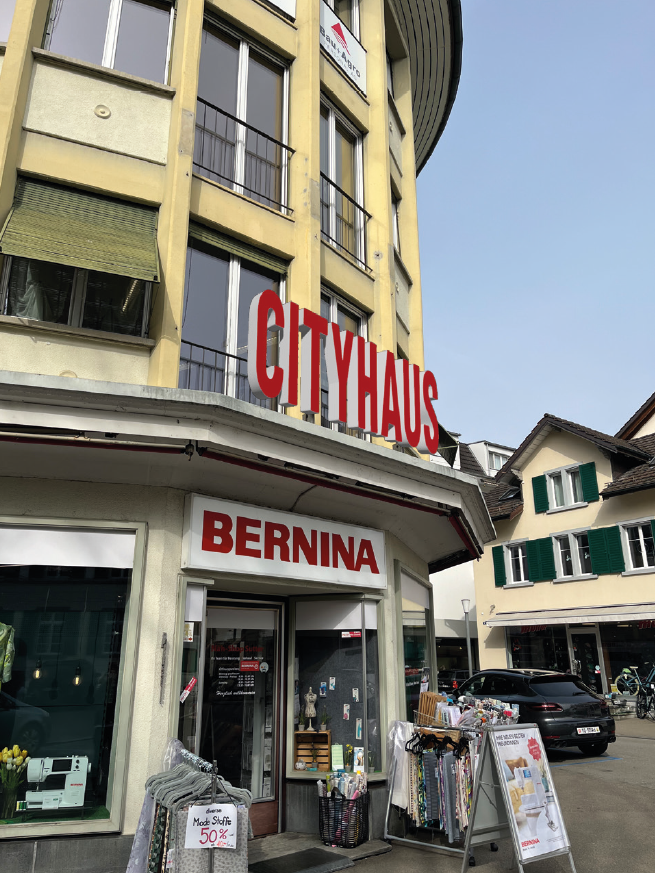

Geschichte
Das markante Eckgebäude in Weinfelden wurde 1963 erbaut und beherbergte über Jahrzehnte das Ladengeschäft der Familie Conrad. Seit Kurzem nutzt die Thurgauische Kunstgesellschaft die historischen Räume als Pop-up-Galerie und zeigt dort wechselnde Ausstellungen zeitgenössischer Kunst aus der Region.
